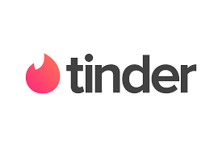

היי 👋🏻👋👋🏽👋🏼👋🏾👋🏿
לפני הכל חשוב לי להדגיש – זה נכתב בטון הומוריסטי אז אין צורך לקחת קשה, כותבת לגבי החוויה האישית שלי בלבד.
אז ככה, תמיד עניין אותי העולם הזה של אפליקציות היכרויות. הרי בתכל'ס זה כמו שוק: כולם מחפשים, כולם בוחנים, וחצי מהמוצרים פגי תוקף.
עשיתי לי מחקר קטן – כן, כן קראתן נכון: We listen and we don't judge.
האפליקציות שנבדקו
- OK Cupid: גן עדן לאנשים שאוהבים copy paste. בחיי, יש שם גברים שאפשר לעשות עליהם מחקר מדעי – אותה הודעה לכל בחורה, מילה במילה.
- Bumble: האפליקציה היחידה שבה את שולחת הודעה, והוא מרגיש כאילו עלה לבמה וזכה באוסקר.
- Tinder: שמתי מרחק 20 ק"מ. האפליקציה: יאללה, נביא לה חתן מסוריה. 
המסקנות (חזק חזק)
- 99% מהגברים מחליקים ימינה על כל בחורה עם דופק. נדיבים ממש, חסידי אומות עולם.
- אותם פרופילים בכל אפליקציה. אם הייתי מקבלת שקל על כל אחד, הייתי יושבת עכשיו לקפה עם עומר אדם במשמר השבעה.
- פרופילים מזויפים? חיים אתגר משקשק – מוכנה תמורת סכום סמלי למכור לו את הרעיון שלי: "אני הדוגמן הברזילאי שאת רואה בפרופיל – אני פשוט ביישן".
- נשואים, "יחסים פתוחים", סרסורים, ושאר הפתעות מהגיהינום – WTF?!
- סלפי חצי ערום מול המראה – לא סקסי. זה יותר "שכחתי חולצה אחרי אימון".
- גם אלה שכותבים "מחפש קשר רציני" לפעמים מתגלים כהודעת "מה קורה? ישווה? בא לך סKס?" אחרי שלוש שורות.
- מי שחושב שלהטריד בהודעות זה נורמלי – תעמידו אותו במקום שיתחרט על היום שאמא שלו הביאה אותו לעולם.
- גברים נורמליים – זן כל כך נדיר, כמו למצוא נפט בתל אביב.
- תל אביבים? BIG NO NO. חיסכו לעצמכם את הכאבי ראש.
- והדובדבן שבקצפת: "ראיתי שאת מחפשת קשר רציני, יש קבלת חריגים?" – if you know, you know.
תזכורת לעצמי: זה לא בשבילי. אני אחפש את הבעל החנון שלי בספרייה – שם לפחות אף אחד לא יצלם את עצמו בלי חולצה.